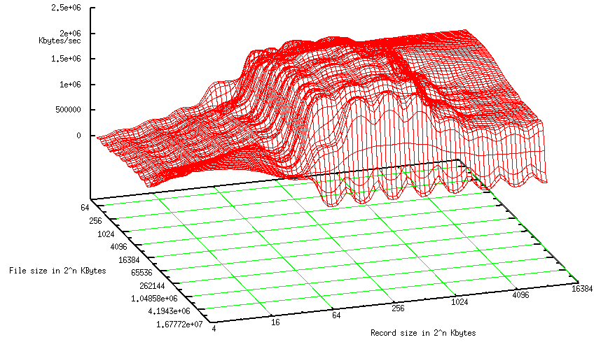
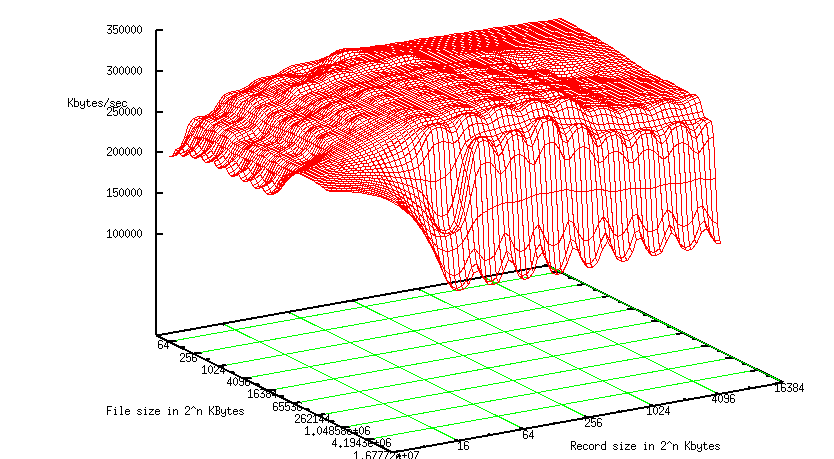
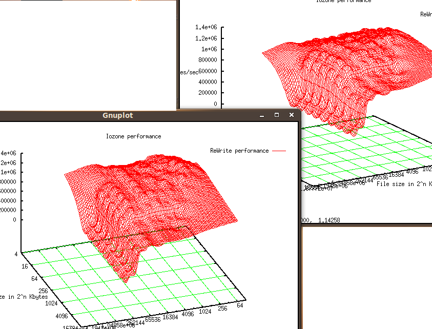

Nehemiah I. Dacres
Appliance analasis
September 21, 2009
HPC Project
There are virtues for a NAS appliance, we just need to find them.
Hypothesis: we can do better than and NexentaStor and OpenFiler but we must deal with them on separate accords because of the differences in their NAS approach. After evaluating the software, I can make the argument that their hindrances are not worth their utility.
We will be evaluating the two solutions on two aspects. Performance and Manageability. Performance test will be on the performance of the filesystems' features and proficiency of storing, retrieving and maintain data integrity. The Manageability evaluation will be on the NAS software's utility, usability and stability.
First IOzone will test the read and write performances of the file systems in use. Nexenta uses zfs for both volume management and file management; it serves up files via NFSv4. OpenFiler uses lvm for volume management and We will be using ext3 rather than xfs for file management because in recent benchmarks ext3 beat xfs in larger write performance. Ext3 also beat xfs in a multi client load simulator (dbench).
OpenFiler has the issue of an inoperable default install because it gives no hints on what space is allocated for what purpose. It seems allocating space via LVM and not labeling it gives you a volume group to start with. It also seems unaware of empty space on which you can create Logical Volumes with. The interface for creating partitions is based on cylinders instead of size. Nexenta is an OpenSolaris based NAS with Ubuntu userland. I have recently acquired root on the device so perhaps it will become more manageable after editing the /etc/apt/sources.conf (and the ntp server)
Open filer has a retarded install and Nexenta wants exorbant ammounts of cache for things I could do my self. After Sun went thorugh so much trouble to make ZFS braindead easy they go and put a web interface with flash and stuff. My main problem is that it takes a bit of doing to install software on either of these. Nexenta's barron repository is the result of their decision to use the debian package manager and then instead of just making it an interface to the PKG system or the Image Packaging System, you have to build a deb package for (Open)solaris OS. conary of rPath linux, what OpenFiler is based on, is easily more annoying becuase there is no way (documented) to search the repository for a package from the CLI, you must do it from the web. It is indeed a good thing you can't do this from the web for either of these. but it took a week to get iozone and bonnie and bonnie++ installed. Here are the results of bonnie++ 3.1d, bonnie never installed
server side tests.
------Sequential Output------ --Sequential Input- --Random-
-Per Chr- --Block-- -Rewrite- -Per Chr- --Block-- --Seeks--
Size K/sec %CP K/sec %CP K/sec %CP K/sec %CP K/sec %CP /sec %CP
4088M 42220 96 46641 19 23521 6 48500 93 51763 5 399.9 1
------Sequential Create------ --------Random Create--------
-Create-- --Read--- -Delete-- -Create-- --Read--- -Delete--
files /sec %CP /sec %CP /sec %CP /sec %CP /sec %CP /sec %CP
16 +++++ +++ +++++ +++ +++++ +++ +++++ +++ +++++ +++ +++++ +++
Nexenta
------Sequential Output------ --Sequential Input- --Random-
-Per Chr- --Block-- -Rewrite- -Per Chr- --Block-- --Seeks--
Size K/sec %CP K/sec %CP K/sec %CP K/sec %CP K/sec %CP /sec %CP
4088M 38718 33 40806 12 24103 9 51860 54 51208 7 341.3 1
------Sequential Create------ --------Random Create--------
-Create-- --Read--- -Delete-- -Create-- --Read--- -Delete--
files /sec %CP /sec %CP /sec %CP /sec %CP /sec %CP /sec %CP
16 15313 99 +++++ +++ 22322 99 7357 99 +++++ +++ 8265 99
As you can see from these bonnie++ readings, the NexentaSTOR sequential ouptut was actually slower, but took up less CPU time.
IOZONE test
In write performance there was an issue with the write performance of OpenFiler as evedent from the hole in the graph but the test were reproduced in time.
 Through the second test we acquired sufficient results and evidence that the tests were consistent (and reproducible). The results below illustrate the single difference in the two test subjects.
Through the second test we acquired sufficient results and evidence that the tests were consistent (and reproducible). The results below illustrate the single difference in the two test subjects.

Above are the Nexenta results, and below are the Open Filer results.

As one can see from the measurements, the Openfiler results are more planar and less varying. However, the plain barely approaches the medians of the write speeds for NexentaStore. Nexenta has varying speeds that show an amoritization for larger file writes (not writes to larger files). The sweet spot for Nexenta seems to be a little less than the size of the O.S cache, 1024.
The graphs for the rest of the performance were identical which is a significant result for such differing environments.

The client side tests will be performed from a machine running a Linux with a version of Bonne++ and iozone. The tests specifically gauge NFS server performance, later we will guage their client performance. To test their performance with respect to the client, we will run IOZone and Bonnie++ 1.03d test from an Ubuntu an desktop distro. We could compare sysconfig and nfs properties but it is a distribution closest to our intended clients.